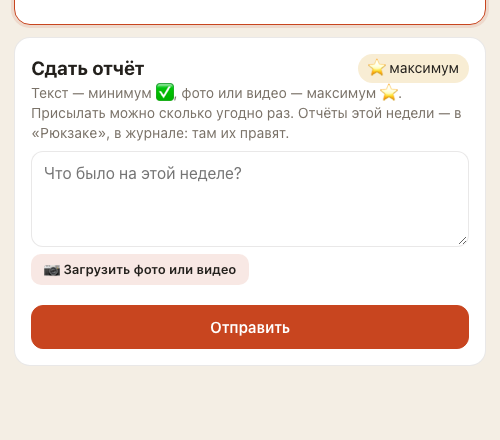
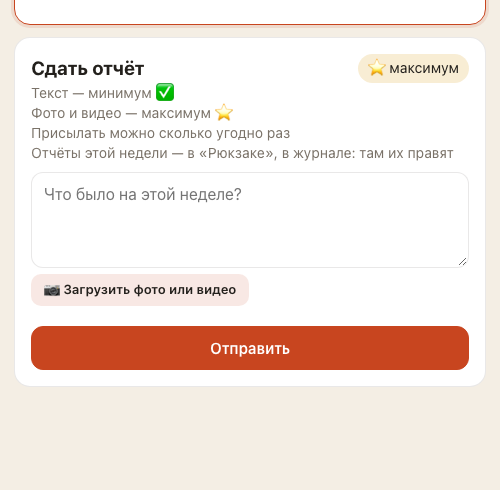
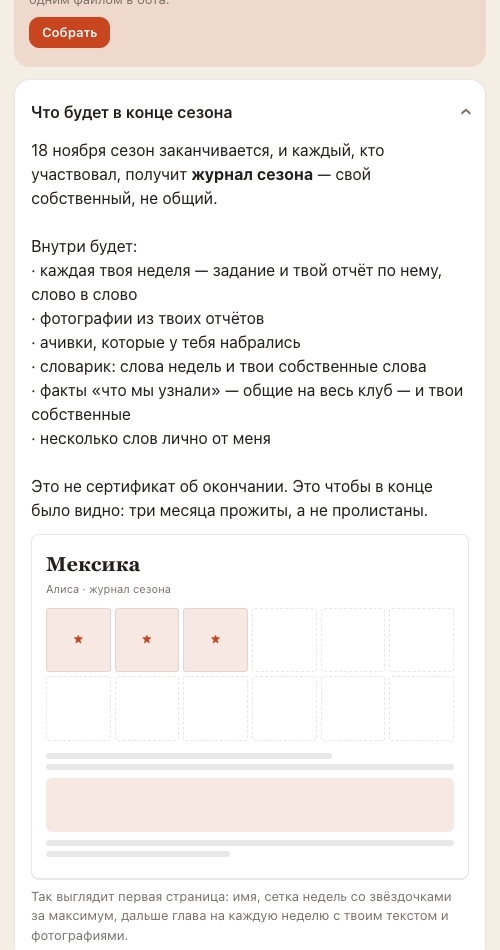

Третий список правок за 19 сентября — то, что ты надиктовала ночью, глядя на выкаченную версию. Ниже, что изменилось, и одна вещь, которую я отложила в отдельную задачу.
Что увидят люди: было → стало
Форма «Сдать отчёт»
было

Одно предложение в три строки подряд: «Текст — минимум ✅, фото или видео — максимум ⭐. Присылать можно сколько угодно раз. Отчёты этой недели…» — глаз не цепляется.
стало

Четыре строки: «Текст — минимум ✅» / «Фото и видео — максимум ⭐» / «Присылать можно сколько угодно раз» / «Отчёты этой недели — в «Рюкзаке», в журнале: там их правят». Последняя строка появляется у тех, кто уже сдал.
Журнал: кнопка, что получится, и сам журнал

Порядок такой, как ты просила: «Журнал в PDF» с кнопкой «Собрать» → «Что будет в конце сезона» → сам журнал. Внутри блока — макет первой страницы: название сезона, имя, сетка недель (⭐ за максимум, ✅ за минимум — те же значки, что в настоящем файле), полоски текста и место фотографии.
Мелочи, которые ты назвала
День майя: «день по календарю майя» / «сегодня: 6 Ахау · владыка» / толкование / «Узнай своё предназначение →».
Значение слова недели теперь можно писать в две строки: первая — перевод, вторая — пример. Работает в задании, в листе недели, на «Карте» и в боте.
Твои «Факты клуба» в «Рюкзаке» больше не дублируют «Карту»: там только форма и строка «Твои факты живут на «Карте» — здесь их можно только добавить».
Вступление недели 3 — вместо служебной заметки («Это обещание из приветственного поста…») теперь: «Мексика звучит не только мариачи. Есть кумбия, есть corridos tumbados, есть мексиканское инди — и это слушают сейчас, а не в кино про Мексику». Уже в боте.
Что проверено и как
Кто
Что делал
Итог
Автоматические проверки
Стиль кода и 541 тест
зелёное
Помощник по коду
Читал каждую строку правок
проходит; нашёл пять вещей в моём макете — от конфликта имён в вёрстке до звёздочек, которые ставились не по тем правилам, что в настоящем журнале. Закрыто
Помощник по экранам
Щёлкает приложение и бота
нашёл мою грубую ошибку: макет разворачивался на весь экран поверх вкладок, и выйти было нельзя. Починено; перепроверяет
Что дальше
Выкачу, как только придёт подтверждение — ты сказала не ждать отдельного слова.
Отложено в отдельную задачу. Ты выбрала оставить у второй недели оба слова — и arte, и alebrije. Сейчас бот держит ровно одно слово на неделю: это поле в базе, редактор в админке, текст задания, словарик и журнал. Сделаю следующей задачей, отдельно от этой выкатки, чтобы не тащить в один заход большую переделку.
После выкатки посмотри: «Неделя» — форма строками и «сегодня:» в дне майя; «Рюкзак» — кнопка «Собрать», под ней «Что будет в конце сезона» с макетом, ниже журнал. Если что-то не так — скажи словами, верну.